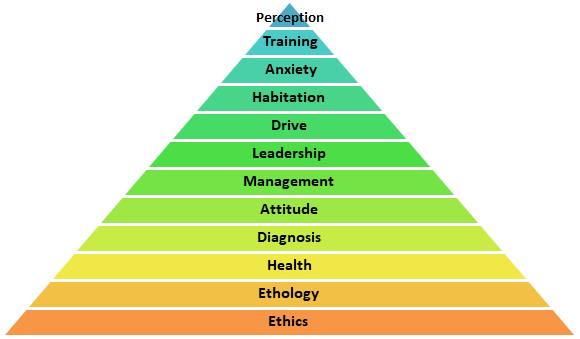
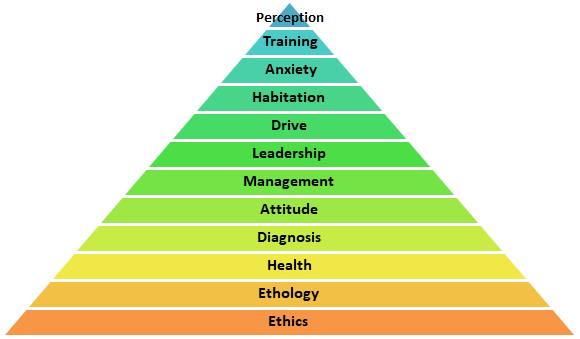

Methodology
I use the Least Intrusive, Minimally Aversive (LIMA) technique training. LIMA uses the least intrusive, minimally aversive strategy out of a set of humane and effective tactics likely to succeed in achieving a training or behavior change objective. LIMA does not justify the use of punishment in lieu of other effective interventions and strategies. In the vast majority of cases, desired behavior change can be affected by focusing on the animal’s environment, physical well-being, and operant and classical interventions such as differential reinforcement of an alternative behavior, desensitization, and counter-conditioning.
 
